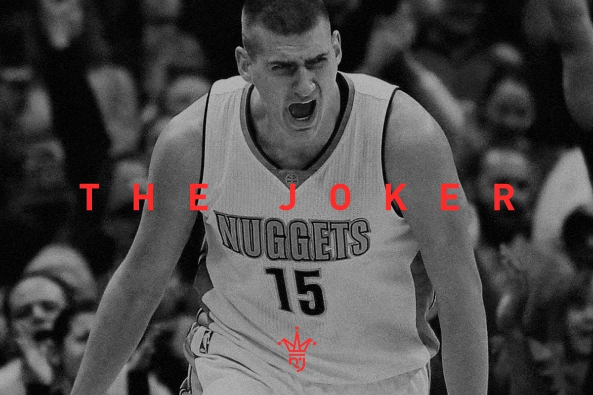
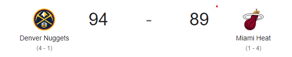

<!DOCTYPE html>
<html lang="en">
<head>
    <meta charset="UTF-8">
    <meta name="viewport" content="width=device-width, initial-scale=1.0">
    <title>Document</title>
</head>
<body>
    <header>

    </header>
    <main>

    </main>
    <footer>

    </footer>
    
</body>
</html>

<!DOCTYPE html>
<html lang="es">
    <head>
        <meta charset="UTF-8">
        <meta http-equiv="X-UA-Compatible" content="IE=edge">
        <meta name="viewport" content="width=device-width, initial-scale=1.0">
        <link rel= "shortcut icon" href="logo.ico" type="icon/x logo">
        <link rel="stylesheet" href="./css/estilo.css">
        <link rel="preconnect" href="https://fonts.googleapis.com">
        <link rel="preconnect" href="https://fonts.gstatic.com" crossorigin>
        <ling href="https://cdn.jsdelivr.net/npm/bootstrap@5.3.0/dist/css/bootstrap.min.css" rel="stylesheet" integrity="sha384-9ndCyUaIbzAi2FUVXJi0CjmCapSmO7SnpJef0486qhLnuZ2cdeRhO02iuK6FUUVM" crossorigin="anonymous">
        <link href="https://fonts.googleapis.com/css2?family=Poppins&display=swap" rel="stylesheet">

        <title>NBA - Inicio</title>
    
    
    </head>
    <body class="fondo">
        <header class="header">
            <section class="logo">
                <a href="./index.html"></a>
            </section>
            <nav>
                <nav class="navbar navbar-expand-lg bg-body-tertiary">
                    <div class="container-fluid">
                      <a class="navbar-brand" href="#">Navbar</a>
                      <button class="navbar-toggler" type="button" data-bs-toggle="collapse" data-bs-target="#navbarSupportedContent" aria-controls="navbarSupportedContent" aria-expanded="false" aria-label="Toggle navigation">
                        <span class="navbar-toggler-icon"></span>
                      </button>
                      <div class="collapse navbar-collapse" id="navbarSupportedContent">
                        <ul class="navbar-nav me-auto mb-2 mb-lg-0">
                          <li class="nav-item">
                            <a class="nav-link active" aria-current="page" href="#">Home</a>
                          </li>
                          <li class="nav-item">
                            <a class="nav-link" href="#">Link</a>
                          </li>
                          <li class="nav-item dropdown">
                            <a class="nav-link dropdown-toggle" href="#" role="button" data-bs-toggle="dropdown" aria-expanded="false">
                              Dropdown
                            </a>
                            <ul class="dropdown-menu">
                              <li><a class="dropdown-item" href="#">Action</a></li>
                              <li><a class="dropdown-item" href="#">Another action</a></li>
                              <li><hr class="dropdown-divider"></li>
                              <li><a class="dropdown-item" href="#">Something else here</a></li>
                            </ul>
                          </li>
                          <li class="nav-item">
                            <a class="nav-link disabled">Disabled</a>
                          </li>
                        </ul>
                      </div>
                    </div>
                  </nav>
                  
            </nav>

        </header>

    <main>
            <div class="container-all">
  
              <h1 class="title">Nikkola</h1>
              
              <p>
                Nikola Jokic, jugador profesional de baloncesto serbio de 2,11 metros de estatura se desempeña en la posición de pívot. 
                Desde su debut en la NBA en la campaña 15/16, Nikola Jokic ha sido nombrado en dos ocasiones como el MVP de la NBA (2021 y 2022)
                 y este año, además de lograr su primer Anillo con los Nuggets, ha recibido el premio al MVP de las Finales.
              </p>
              <p>Jokic, es el nuevo primer pívot en ganar el MVP de las Finales desde Shaquille O'Neal. Jokic, primer pívot en ganar el MVP de las Finales desde Shaquille O'Neal</p>
  
            </div>

            <div class="container-all2">
  
                <h1 class="title">Resultados Finales de PLAY-OFF</h1>
                
                <p>
                  Nikola Jokic, jugador profesional de baloncesto serbio de 2,11 metros de estatura se desempeña en la posición de pívot. 
                  Desde su debut en la NBA en la campaña 15/16, Nikola Jokic ha sido nombrado en dos ocasiones como el MVP de la NBA (2021 y 2022)
                   y este año, además de lograr su primer Anillo con los Nuggets, ha recibido el premio al MVP de las Finales.
                </p>
                <p>Jokic, es el nuevo primer pívot en ganar el MVP de las Finales desde Shaquille O'Neal. Jokic, primer pívot en ganar el MVP de las Finales desde Shaquille O'Neal</p>
    
              </div>


        
      
              
    
    </main>
          
        
        

        
            

        <footer>

        </footer>   
        <script src="https://cdn.jsdelivr.net/npm/@popperjs/core@2.11.8/dist/umd/popper.min.js" integrity="sha384-I7E8VVD/ismYTF4hNIPjVp/Zjvgyol6VFvRkX/vR+Vc4jQkC+hVqc2pM8ODewa9r" crossorigin="anonymous"></script>
    </body>
</html>